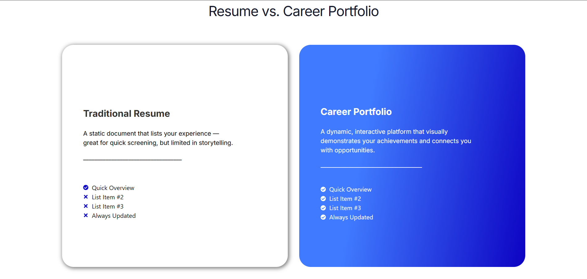
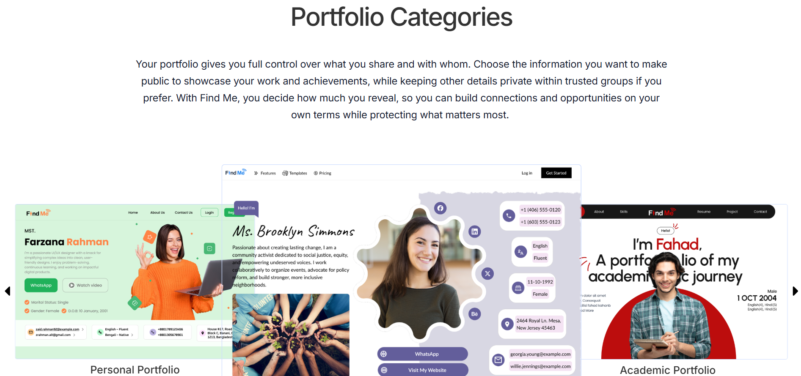

What I did
FyndMe at fyndme.co positions itself as a "career portfolio platform", not a resume builder, not a LinkedIn clone. My job was to make that positioning tangible in the product: the category-picker, template picker, builder canvas, and publish/share flow.
Category-first onboarding
Instead of asking "what's your name," onboarding asks "what kind of story are you telling?" Nine categories, Personal, Academic, Creative, Restaurant, Business, Practitioner, Community, Lifestyle, Matrimonial, each routed to a template that fit the intent. This one decision drastically reduced blank-canvas abandonment.
Category → template → builder → publish
The four-step path was designed to feel like shopping for identity: pick your category, preview a template, customize, publish. Every step had a visible "you are here" state so users never felt lost mid-flow.
Mobile-first from day one
The audience was young, career-pivoting, and almost always on mobile. Typography scale, tap targets, and sticky actions were all designed for a 375px viewport first.